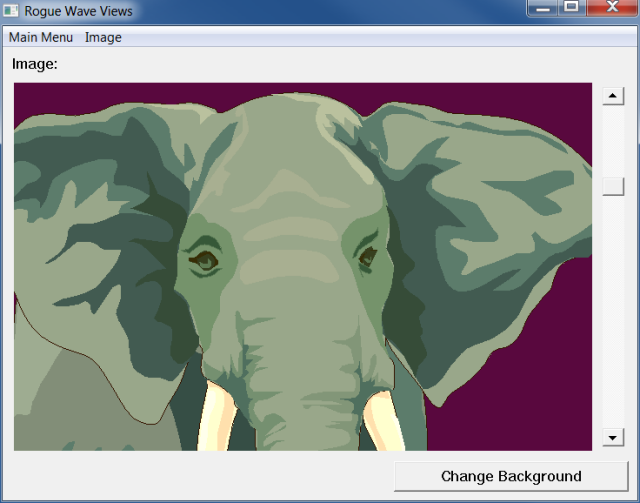
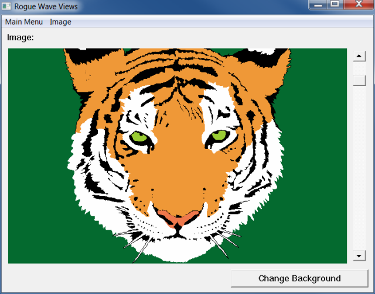
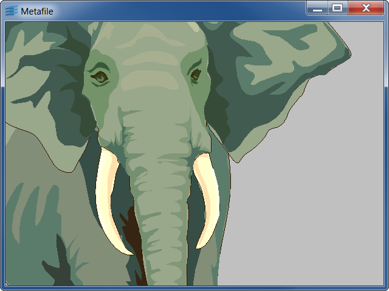
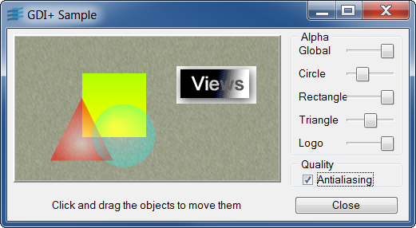

ilvwinIntegrate Windows components into a Rogue Wave Views application.
This sample illustrates how to integrate Windows components into an
Rogue Wave Views application.
You can load files using the real Windows menus and change the
zooming factor by moving the slider. The button lets you change the
view background.
You can drag and drop ILV files from the File Manager to the
Rogue Wave Views container window.
winilvIntegrate Rogue Wave Views components into a Windows application.
This sample illustrates how to integrate Rogue Wave Views components in
a Windows application.
Here, the whole interface was built in a Windows Dialog.
You can load files using the real Windows menus and change the
zooming factor by moving the slider. The button lets you change the
view background.
IlvDisplayIlvContainermetafileConvert Rogue Wave Views data files to a Windows metafile.
This sample illustrates how to convert a Rogue Wave Views data file to a
Windows metafile.
The program is based on an extension of the
IlvWindowsVirtualDevice class.
To actually convert the graphic file, press the 'D' key when the
focus is set in the container.
You may also use the following accelerators:
ilvmdiUse of the IlvMDIChild property on Rogue Wave Views views.
This sample shows you how to use the IlvMDIChild property on
Rogue Wave Views views.
IlvViewgdiplusThis sample shows the GDI+ features used in Rogue Wave Views.
This sample shows the GDI+ features used in Rogue Wave Views : Transparency and Anti-aliasing. It allows you to change the transparency of the displayed objects, as well as the antialiasing mode used. Note that this sample use Rogue Wave Script to perform the actions, and that the C++ part only load the ILV file containing both the GUI and the script functions.
IlvGadgetContainer